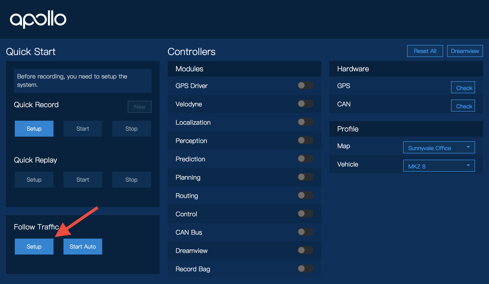

Apollo 1.5 快速入门指南
这个快速入门指南专注于Apollo 1.5新功能的介绍。对于Apollo的一般概念，请参考 Apollo 1.0 快速入门指南和Apollo软件安装指南。
上车测试
上车测试，请确认你已经调试了LiDAR与GNSS/INS之间的外部参数。关于传感器标定，请参考Apollo 1.5 LiDAR calibration guide。
启动发布的环境的Docker镜像
启动HMI
打开浏览器（譬如Chrome）然后在地址栏输入localhost:8887来开始Apollo的HMI。

选择车辆和地图
单击右上角下拉菜单选择车辆和地图。这个列表是在HMI config file中定义的。
注意：你也可以在HMI的右侧界面来更改个人配置。只要记得点击右上角的“Reset All”来重启系统就好

启动所有模块

谨慎启动自动驾驶模式
确定硬件已经齐备，所有模块已经打开并且汽车状态良好，可以安全进入自动模式自动跟车到达目的地。